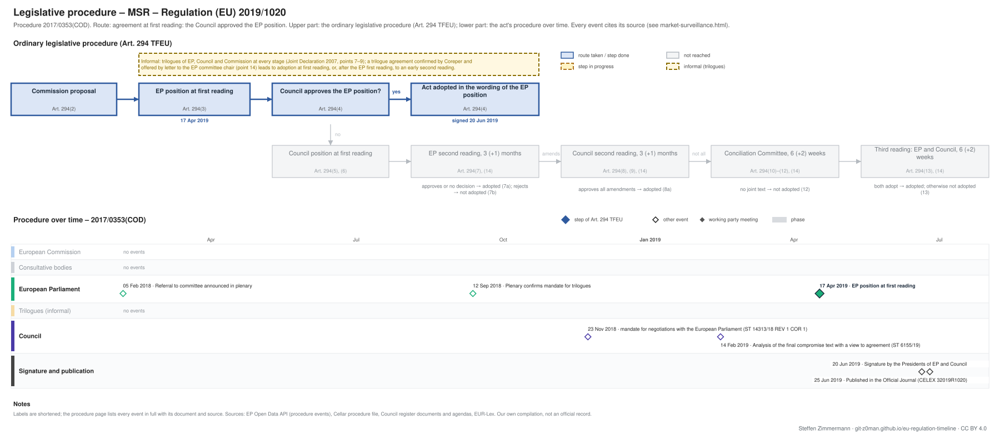

← Regulation timeline › MSR › Legislative procedure · All procedures
Procedure 2017/0353(COD), completed. Drawing: SVG · PNG · PDF (A3) · draw.io · Page as Markdown: market-surveillance.md
| Stage | Completed, published 25 Jun 2019 |
|---|---|
| Latest activity | 25 Jun 2019 · Signature and publication: Published in the Official Journal (CELEX 32019R1020) |

| Date | Actor | Event | Document | Source |
|---|---|---|---|---|
| 2018-02-05 | European Parliament | Referral to committee announced in plenary | EP procedure file | EP Open Data API, procedure 2017-0353 (REFERRAL) |
| 2018-09-12 | European Parliament | Plenary confirms mandate for trilogues | EP procedure file | EP Open Data API, procedure 2017-0353 (PLENARY_ENDORSE_COMMITTEE_INTERINSTITUTIONAL_NEGOTIATIONS) |
| 2018-11-23 | Council | mandate for negotiations with the European Parliament | ST 14313/18 REV 1 COR 1 | Cellar procedure file 2017/353 (Council register) |
| 2019-02-14 | Council | Analysis of the final compromise text with a view to agreement | ST 6155/19 | Cellar procedure file 2017/353 (Council register) |
| 2019-04-17 | European Parliament | Plenary adopt position | EP procedure file | EP Open Data API, procedure 2017-0353 (PLENARY_ADOPT_POSITION) |
| 2019-06-20 | Signature and publication | Signature by the Presidents of EP and Council | EP procedure file | EP Open Data API, procedure 2017-0353 (SIGNATURE) |
| 2019-06-25 | Signature and publication | Published in the Official Journal | CELEX 32019R1020 · en.md de.md | EP Open Data API, procedure 2017-0353 (PUBLICATION_OFFICIAL_JOURNAL) |
Every document the Council register, the EU database of the Parliament of Austria or the EP lists for the procedure, with its state: public documents link to the official file; documents that are not public link to their entry in the Austrian database where there is one (metadata only). Status: public; not public; not public, leak available (an unofficial copy is known to circulate outside the institutions; it is neither published nor quoted here). Released: when a document listed as not public was released, by the date of the Council's public PDF (a technical date) or else the day our daily check found it public.
| Date | Document | Kind | Subject | Status | Released | Text |
|---|---|---|---|---|---|---|
| 2018-04-27 | ST 7484/18 | council-note | Reasoned opinion on the application of the Principles of Subsidiarity and Proportionality | public status unknown | – | – |
| 2018-08-13 | ST 11613/18 | council-note | List of working papers (WK) distributed in the Working Party on Technical Harmonisation (Goods Package) in the 1st quarter of 2018 | public status unknown | – | – |
| 2018-08-13 | ST 11614/18 | council-note | List of working papers (WK) distributed in the Working Party on Technical Harmonisation (Goods Package) in the 2nd quarter of 2018 | public status unknown | – | – |
| 2018-09-06 | A8-0277/2018 | ep-report | REPORT on the proposal for a regulation of the European Parliament and of the Council laying down rules and procedures for compliance with and enforcement of … | public | – | – |
| 2018-11-23 | ST 14313/18 REV 1 COR 1 | council-position | mandate for negotiations with the European Parliament | public | – | – |
| 2019-02-05 | ST 5841/19 | council-note | Preparation for the trilogue | public status unknown | – | – |
| 2019-02-14 | ST 6155/19 | agreed-text | Analysis of the final compromise text with a view to agreement | public | – | – |
| 2019-04-01 | ST 8106/19 | council-note | List of working papers (WK) distributed in the Working Party on Technical Harmonisation (Goods Package) in the 1st quarter of 2019 | public status unknown | – | – |
| 2019-04-30 | ST 8438/19 | council-note | Outcome of the European Parliament's first reading (Strasbourg, 15 to 18 April 2019) | public status unknown | – | – |
| 2019-05-24 | PE 45/19 | council-note | REGULATION OF THE EUROPEAN PARLIAMENT AND OF THE COUNCIL on market surveillance and compliance of products and amending Directive 2004/42/EC and Regulations … | public status unknown | – | – |
| 2019-05-29 | ST 9429/19 | council-note | Draft REGULATION OF THE EUROPEAN PARLIAMENT AND OF THE COUNCIL on market surveillance and compliance of products and amending Directive 2004/42/EC and … | public status unknown | – | – |
| 2019-05-29 | ST 9429/19 ADD 1 | council-note | Draft REGULATION OF THE EUROPEAN PARLIAMENT AND OF THE COUNCIL on market surveillance and compliance of products and amending Directive 2004/42/EC and … | public status unknown | – | – |
| 2019-06-07 | ST 9429/19 REV 1 | council-note | Draft REGULATION OF THE EUROPEAN PARLIAMENT AND OF THE COUNCIL on market surveillance and compliance of products and amending Directive 2004/42/EC and … | public status unknown | – | – |
| 2019-06-18 | ST 10075/19 | council-note | Voting result REGULATION OF THE EUROPEAN PARLIAMENT AND OF THE COUNCIL on market surveillance and compliance of products and amending Directive 2004/42/EC and … | public status unknown | – | – |
| 2019-06-20 | PE 45/19 REV 1 | council-note | REGULATION OF THE EUROPEAN PARLIAMENT AND OF THE COUNCIL ON MARKET SURVEILLANCE AND COMPLIANCE OF PRODUCTS AND AMENDING DIRECTIVE 2004/42/EC AND REGULATIONS … | public status unknown | – | – |
Unofficial Markdown conversions for reading, searching and project folders; only the official document is authentic. "Read" opens the rendered text on GitHub, where a link to a provision (#art-13, #rec-12, #annex-i) jumps to it.
| Date | Stage | Document | Markdown | Read |
|---|---|---|---|---|
| 2019-06-25 | oj | CELEX 32019R1020 | en de | GitHub |
Comitology committees of Member State representatives give opinions on draft implementing acts (Regulation (EU) No 182/2011); expert groups advise the Commission on delegated acts, guidance and implementation; groups set up by an act itself (e.g. the NIS Cooperation Group) bring together the Member States, the Commission and agencies. Meetings and documents as published in the Comitology Register, the Register of Commission expert groups and on the Commission's pages of these groups, from 2024 on.
Comitology committee C52400, GROW; examination procedure (Art. 5, 6 and 7 of Regulation (EU) No 182/2011). Official source: Comitology Register ↗
| Date | Meeting | Documents |
|---|---|---|
| 2024-06-27 | Sixteenth meeting of the Committee on market surveillance and compliance of products | agenda · draft implementing act v2 · voting sheet · summary record |
Expert group E02798, GROW. Official source: Register of Commission expert groups ↗
No meetings listed.